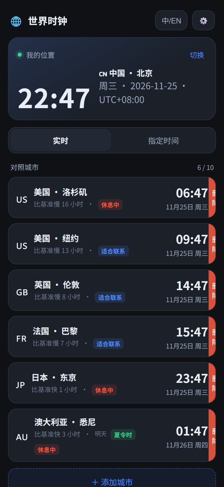
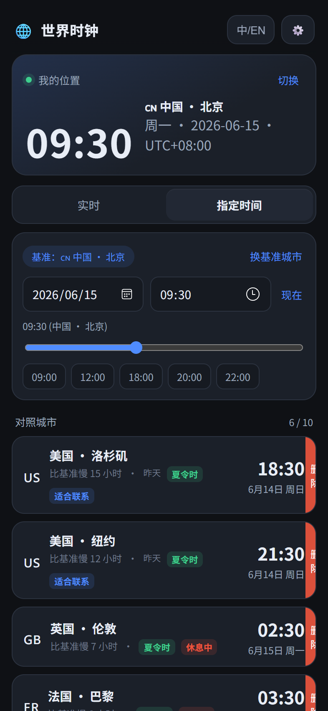
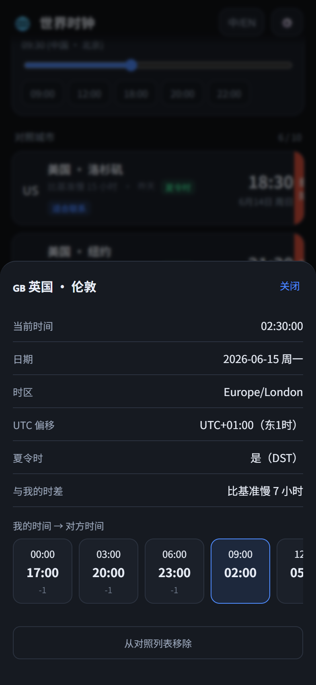
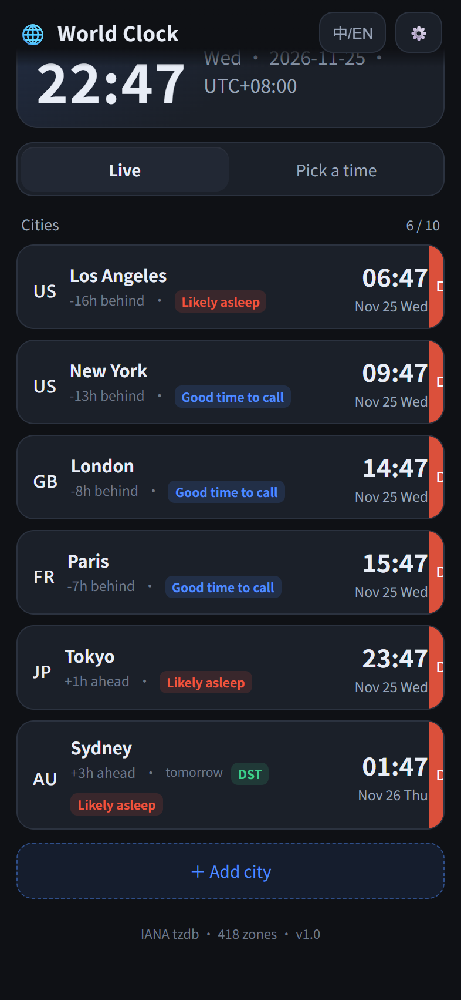

按你设定的位置换算世界各地时间。想看的城市由你自己定，夏令时自动处理，418 个时区，全程离线。
APK + PWA · default UI in English
Download APK Open web app



Safari 打开 网页版 → 点分享按钮 → 添加到主屏幕。之后从桌面图标启动，全屏无地址栏，断网也能用。
网页版（中文） https://6shmilzyh6.github.io/world-clock/app/
网页版（英文） https://6shmilzyh6.github.io/world-clock/app-en/
安卓 APK https://github.com/6shmilzyh6/world-clock/releases/latest/download/WorldClock-zh-v1.0.0.apk
https://github.com/6shmilzyh6/world-clock/releases/latest/download/WorldClock-Intl-v1.0.0.apk
源码仓库 https://github.com/6shmilzyh6/world-clock